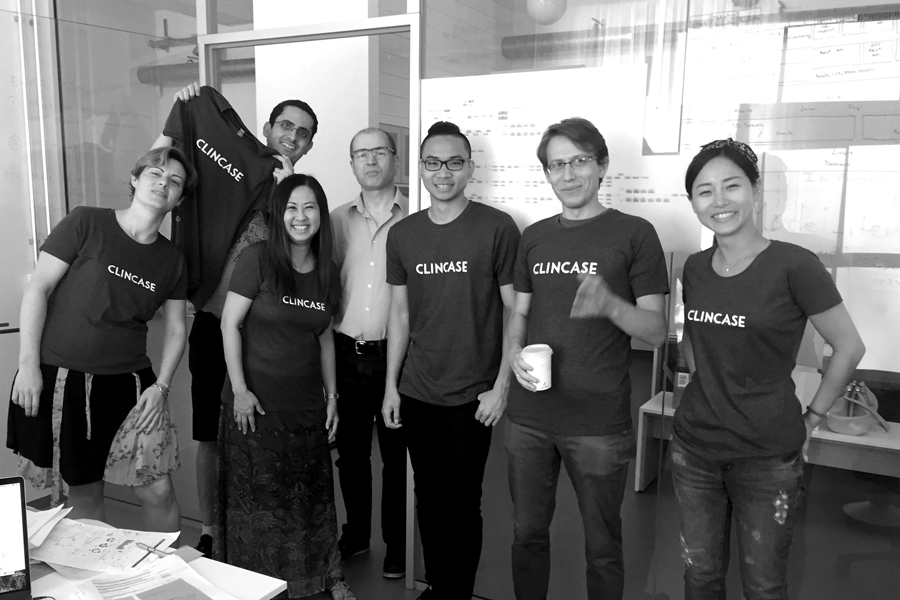

Product Design Internship in Berlin, Germany
This past summer in 2017, I had a fantastic experience working with the best team at Clincase in Berlin, Germany. My responsibilities at Clincase were product design, visual design, usability research for their own products: EPRO and EDC 3.0 for clinical trial case studies. The potential users for the specific products were patients or regular people who would volunteer to participate in clinical trial studies. Therefore, all the design decisions we made must go through validation process by European Medicines Agency (EMA). Under strict regulations, our missions were making products that help patients to perform their daily tasks successfully and efficiently.
Challenge: In the past, patients manually wrote down all the records with papers and pencils. Therefore, accuracy was relatively poorer because patients had to fully rely on their memories to keep on track from one test to the next throughout the whole period of trial. However, technological advancement.
My challenge was to make it easier for patients to perform their daily tests and record results on both patients' own devices and tablet devices, provided by their hospitols. In the mean time, we also had to make sure the product provide pleasant and delightful experience for patients.
User Experience /
End-to-End Experience / Visual Design
Logo Refinement: First of all, I started off with refining the company's logo. Some letters looked bumpy and uneven, and it has lack of blance between letters. I refined them to create the balance. In the mean time, I made sure it was clearly displayed on digital platforms as well.

Color: Excessive use of colors was not allowed by the industry. For this reason, we decided to use monotone with point colors. For the main product(EDC 3.0), we used the bluish turquoise which is associated with meanings of calming, emotional balance, and tranquility. For the other product(EPRO), I decided to use teal with the similar saturation level as the turquoise. Teal also creates tranquility and emotional healing.

Userflow & Persona:
I mainly focused on EPRO experience development. In this case, it was specifically for patients aged between 6-11 and their parents. Therefore, my teammates and I created two different personas, one associates with young patients and the other one associates with parent.
We found that a diary-like experience would be the most effective interface for patients to monitor and perform each task and their condition throughout the day. Also, we realized the reminder and emergency contact features were vital.
Development & Changes: Integrating calendar improved its functionality. Again, the most crucial mission for the product was helping patients to perform daily assigned tasks and record data at the right time. Therefore, using familiar calendar interface makes it easier for them to keep themselves on track. In addition, patients can freely go back and forth between the daily view, weekly view, and monthly view. In the meantime, I decided to apply teal color to differenciate EPRO from the company's main product. But the products keep the cohesion as a whole by having similar treatment of layout, typography, and other visual assets.

